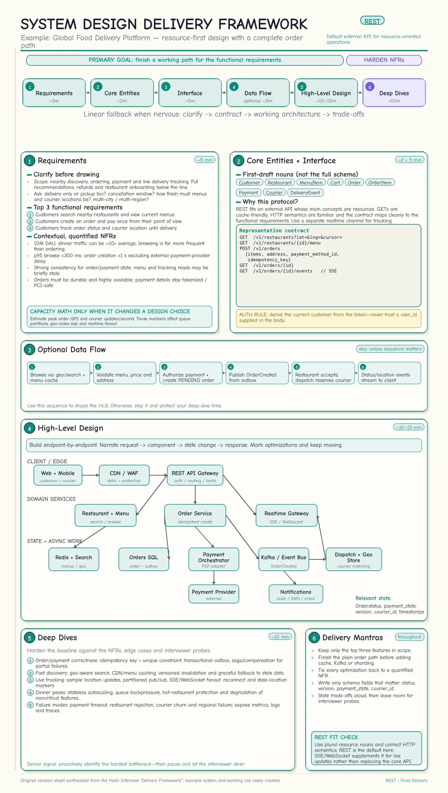
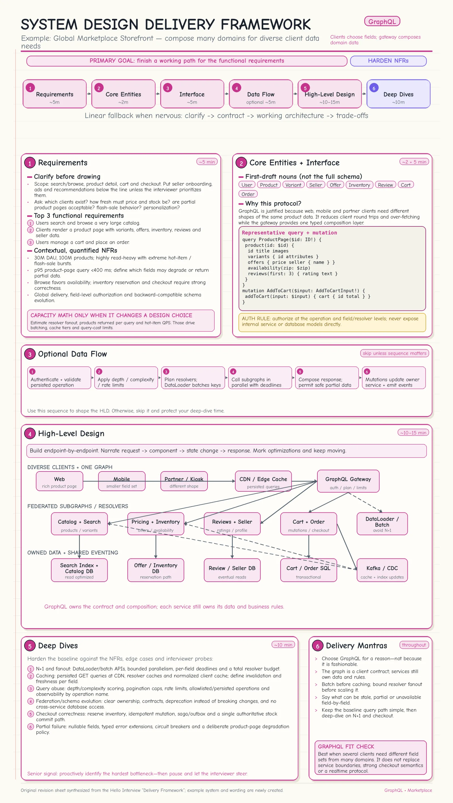
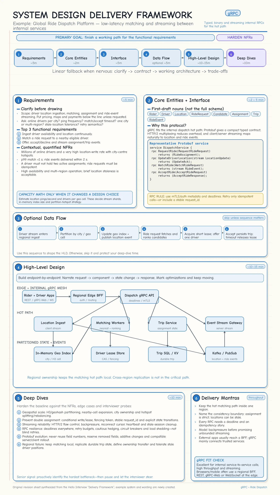

Topic · System Design Delivery Framework
REST vs GraphQL vs gRPC
Choosing the API style in the interface step - shown end-to-end on three example systems.
Worked examples
The six-step framework applied with each protocol (tap for full size).






Quick Revision
- REST - default for public, resource/CRUD APIs; simple, debuggable, HTTP-cacheable.
- GraphQL - when first-party clients need different nested data shapes.
- gRPC - low-latency, strongly typed internal service-to-service calls, streaming.
- Common split: REST/GraphQL at the edge, gRPC inside.
Trade-offs
| Choice | Benefit | Cost / risk |
|---|---|---|
| REST for public APIs | Simple, widely supported, debuggable, HTTP-cache-friendly | Over-/under-fetching, extra round trips |
| GraphQL for storefront aggregation | Clients fetch exactly the fields they need across web/mobile | N+1 queries, query-cost control, authorization, caching complexity |
| gRPC for internal services | Strong contracts, compact Protobuf, streaming, low latency | Browser limits, generated clients, harder debugging |
Failure modes
- GraphQL N+1 or maliciously expensive query - DataLoader/batching, persisted queries, depth limits, complexity budgets, timeouts.
- gRPC call hangs or causes retry storms - deadlines + propagation, bounded retries with jitter, circuit breakers, backpressure.
Interview practice
Answer aloud, then reveal.
Amazon / Moody's (2026): REST vs GraphQL? When would you use gRPC?
REST for public CRUD and HTTP caching; GraphQL for first-party clients needing different nested views; gRPC for controlled service-to-service calls needing strict contracts, streaming, or lower serialization overhead.